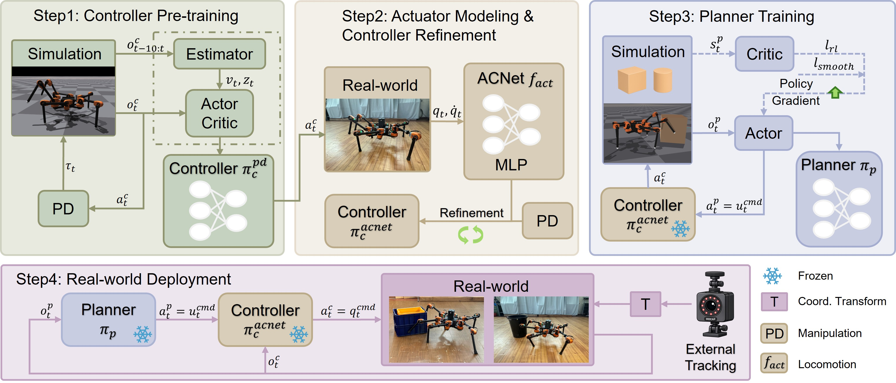
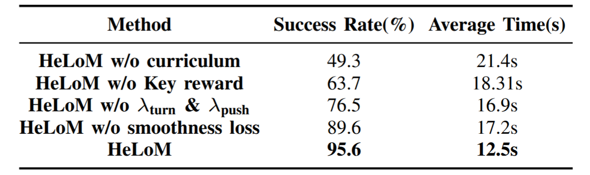
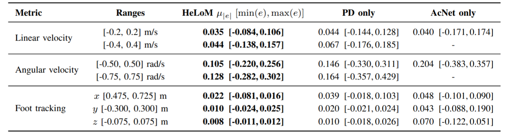
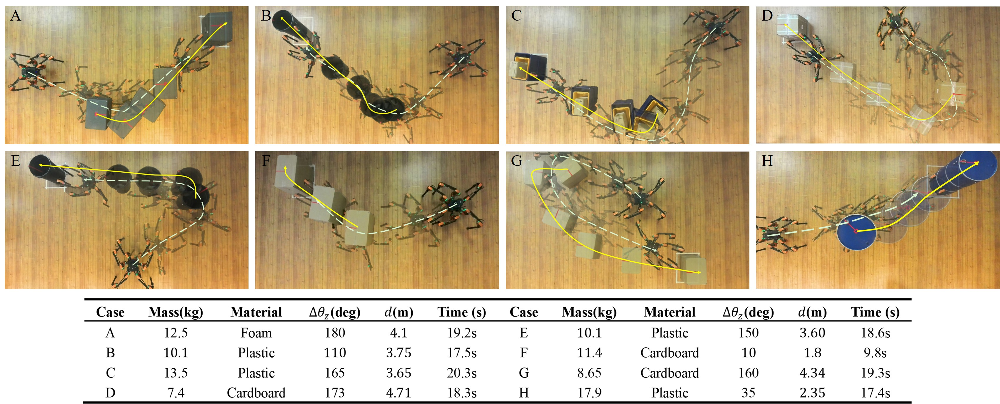
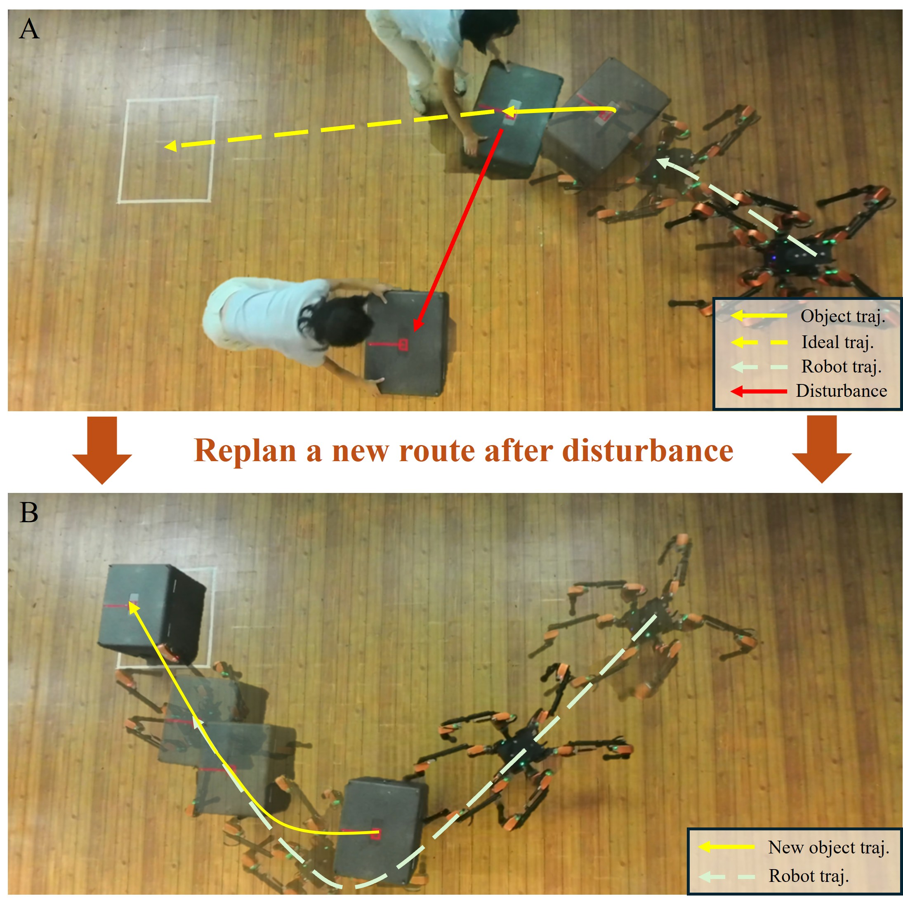

HeLoM: Hierarchical Learning for Whole-Body Loco-Manipulation by a Hexapod Robot
Abstract
In nature, animals often need to move/manipulate objects comparable in weight/size to their own bodies. Compared to grasping and carrying, pushing provides a more straightforward and efficient non-prehensile manipulation strategy, avoiding complex grasp design while leveraging direct contact to regulate an object's pose during interaction. Achieving effective pushing, however, requires both sufficient manipulation capability and stable whole-body coordination, which is particularly challenging when dealing with heavy or irregular objects. To address these challenges, we propose HeLoM, a learning-based hierarchical whole-body manipulation framework for hexapod robots that exploits coordinated multi-limb control and is applicable to multi-legged robotic systems. Inspired by the cooperative strategies of multi-legged insects, our framework leverages multiple contact points and high degrees of freedom to enable efficient and dynamic whole-body coordination during object interaction. HeLoM's high-level planner plans pushing behaviors, while its low-level controller maintains locomotion stability and generates dynamically consistent joint actions. This design enables the robot to maintain balance while executing continuous and controllable pushing behaviors through coordinated foreleg interaction and supportive hind-leg propulsion. We validate the effectiveness of HeLoM through both simulation and real-world experiments. Results show that our framework can stably push objects of varying sizes and unknown physical properties to designated goal poses in the real world.
Framework

Overview of the proposed HeLoM framework. During training, (1) we first pre-train the Controller with randomly sampled commands and a PD controller to establish basic loco-manipulation capabilities. (2) We then collect real-world data using the pre-trained Controller, train an actuator network, and replace the PD controller to further refine the Controller with learned actuator dynamics. (3) Next, the Controller is frozen, and the Planner is trained on top of it to generate effective pushing commands. To improve smoothness and coordination, our Planner and Controller are executed synchronously at 50 Hz. (4) During deployment, a motion-capture system provides the robot and object states in the world frame, followed by coordinate transformation.
Results
We build our training environment in the Isaac Gym simulator and utilize one RTX 4090 GPU to train 4096 robot instances in parallel, which significantly accelerates the convergence of the RL process. We then deploy the trained policy on a HEBI Daisy modular series-elastic hexapod robot, to validate performance in the real world. We evaluate HeLoM in both simulation and real-world experiments, focusing on our Controller performance and Planner's effectiveness in object pushing tasks.
Simulation Success Rate

Success rate and average completion time evaluated across 1000 simulations.
Loco-manipulation performance

Tracking comparison across command ranges.
Legs Interaction with Unknown Objects

Complete robot–object interaction process in a real-world trial. Top: Robot and object trajectories with intermediate states (a–h).Middle: Object–goal distance and yaw error over time. Bottom: Snapshots of the manipulation process, white dots indicate no contact, while colored arrows denote both the contact surface and the direction of foot motion.
Whole-body Pushing Performance

Representative scenarios from real-world experiments. The figure illustrates how the hexapod robot uses its legs to push objects with different initial poses, sizes, weights, materials, shapes, and centers of mass to the desired pose. The table below summarizes the object specifications and experimental parameters.
Robustness Test

Human intervention introduced during the robot pushing task. (A) A disturbance is introduced by manually shifting the object away from its intended trajectory, forcing the robot to deviate from its current path. (B) The robot adapts by replanning a new route, coordinating its forelegs and body to realign the object and guide it back toward the target position.
BibTeX
@article{yang2025helom,
title={HeLoM: Hierarchical Learning for Whole-Body Loco-Manipulation in Hexapod Robot},
author={Yang, Xinrong and Li, Peizhuo and Li, Hongyi and Lu, Junkai and Chang, Linnan and Cao, Yuhong and Zhang, Yifeng and Sun, Ge and Sartoretti, Guillaume},
journal={arXiv preprint arXiv:2509.23651},
year={2025}
}